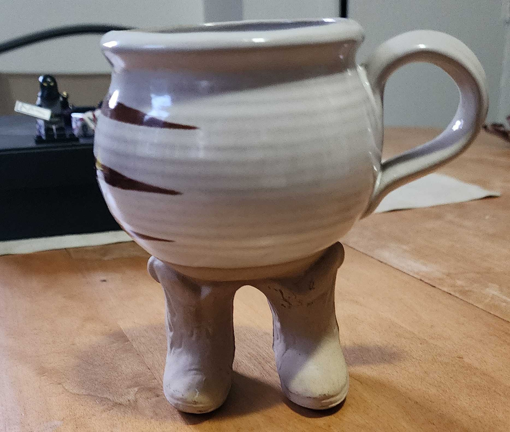
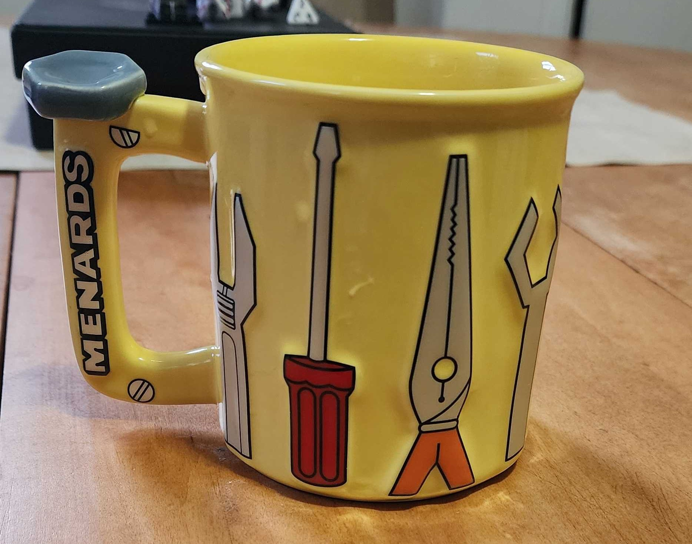
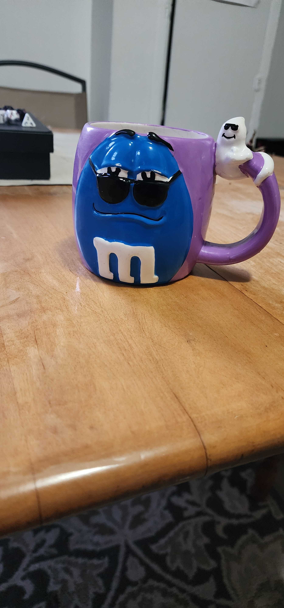
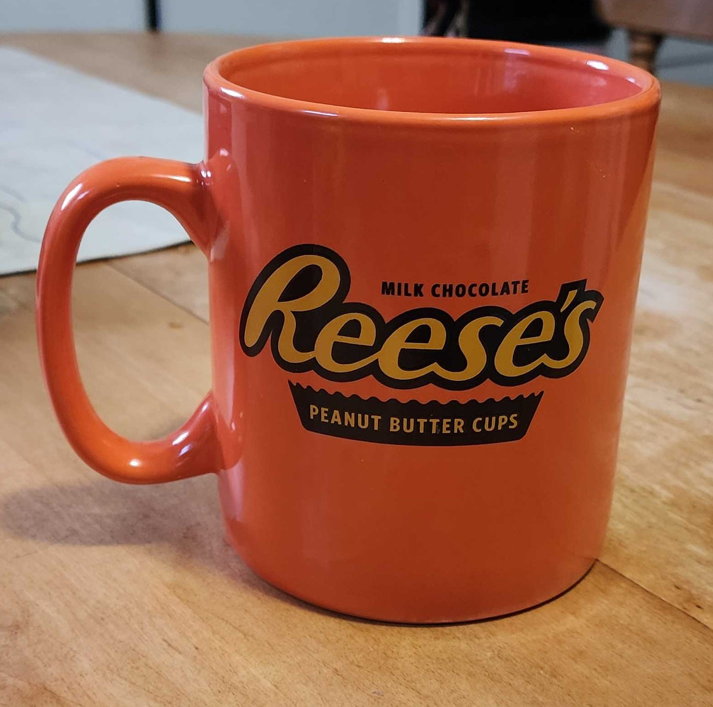
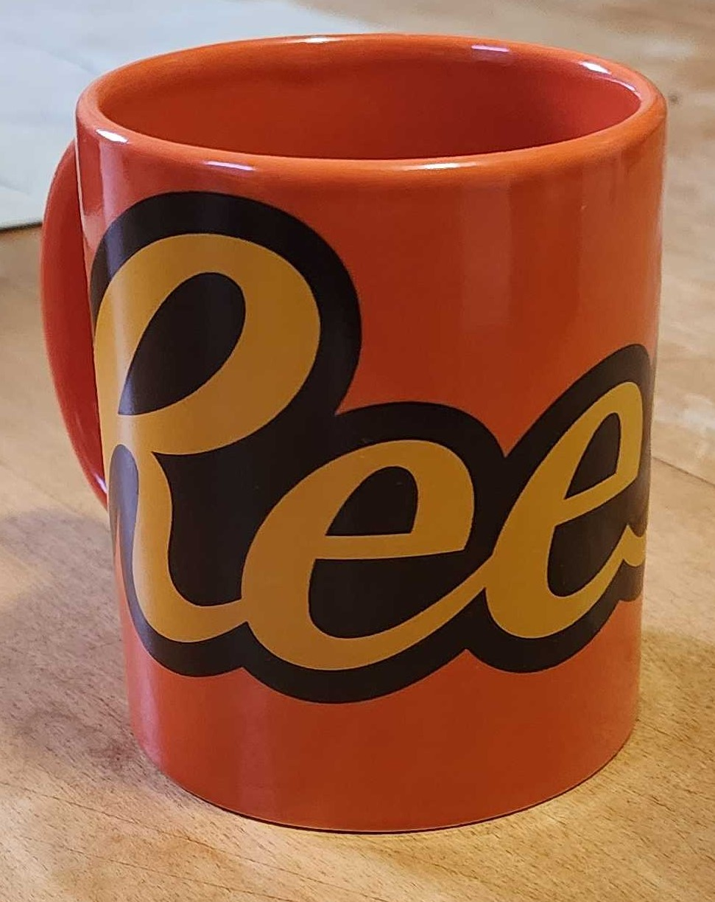
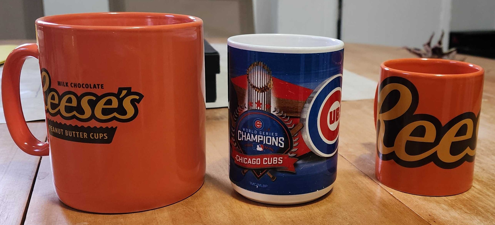
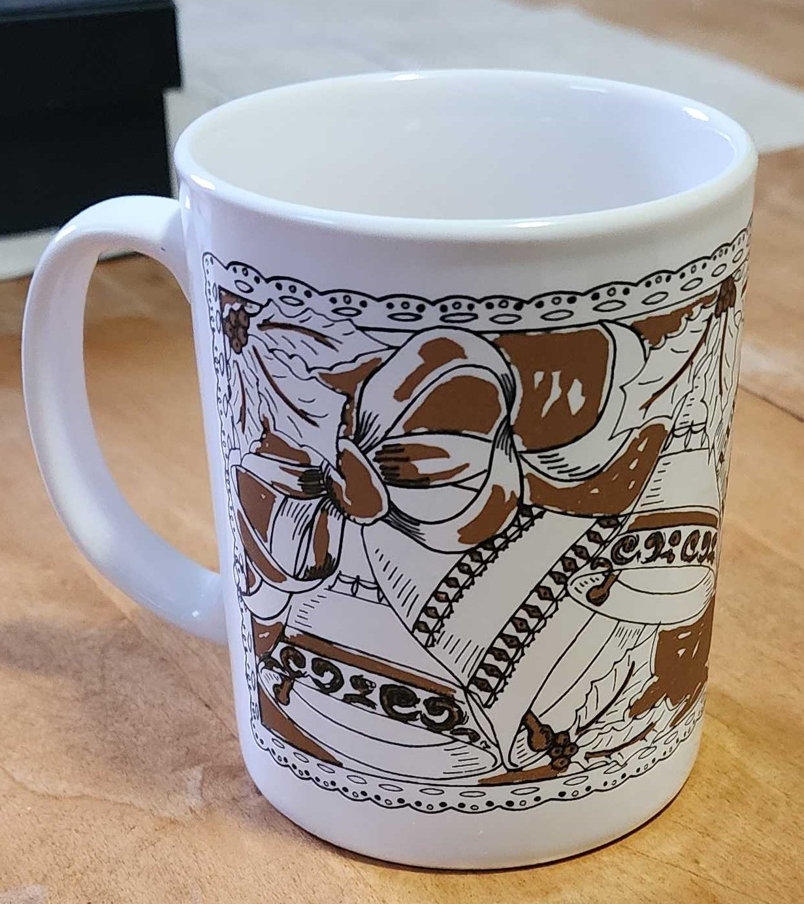
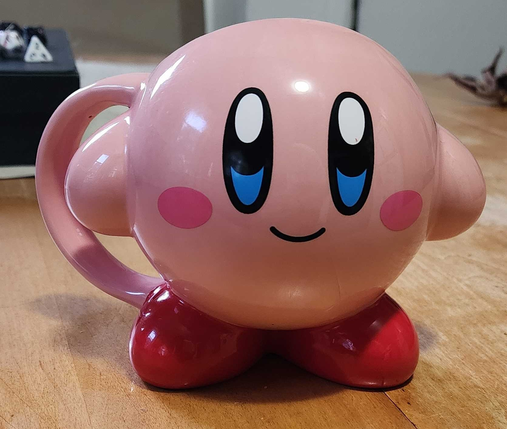
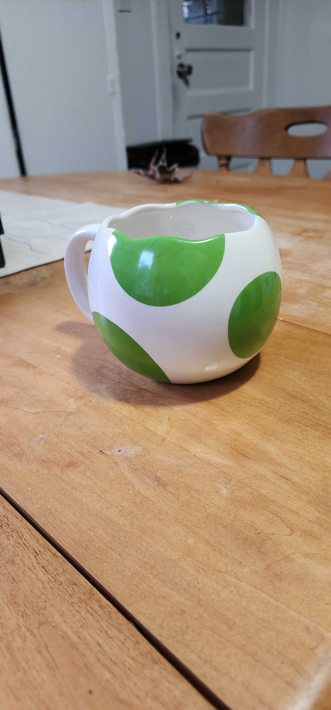
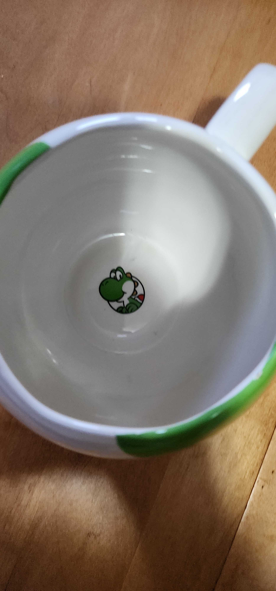

1.Boots

The mug that started it all... Boots is my favorite mug and I think the reason why is obvious. Look at him. he is my son and I love him.
2. Menards Tools

Menards mug I found at goodwill. Cool shape and the tools purtrude out a bit which is fun.
3. Blue m&m

I found this one among 2 other blue m&m mugs at a garage sale. Almost got all three but decided against it as it would be cruel to others. Anyway this
Thing is fucking sick right? Glasses tilted down PLUS a little ghost on the handle ALSO WITH SHADES!!! Very close second fave.
4. Big Reeses

This mug is giant lmao I can comfortably fit 24oz of coffee in it which is nuts but its honestly the best normal mug I have and is my go-to most days
since Boots is a pretty small mug(fits maybe 10oz)
5. Small Reeses

If you were me and you saw this in the goodwill after buying the other Reeses cup would you even have a choice? Had to snag this little lad although
I have never used it for anything LMAO ദ്ദി ˉ͈̀꒳ˉ͈́ )✧

For comparison between the Reeses brothers and a normal 12oz mug
6. Brown Bells

This one is cute idk i'm not usually a christmas person but the brown called to me
7.Kirby

Despite what you may initially think this little bastards shoes are HOLLOW and hard to clean and its lowkey hard to drink out of it but it is Kirby
So that redeems most bad parts about it.
8.Yoshi


Yoshi egg mug isnt that something? splendid sips have been had from this mug, always nice to show to guests and a little on the larger side to allow for comfortable
drinking. My hat is off to you Yoshi Mug